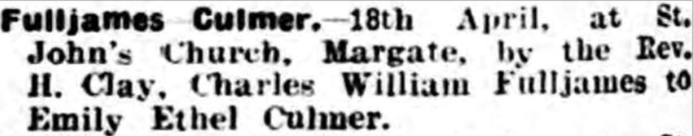
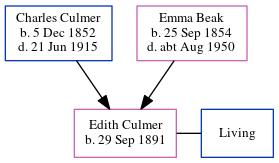

Edith Emily Fulljames (née Culmer) 1891 -
[ Home ] | [ Calendar ] | [ Surnames Index ] | [ Census Index ] | [ Family History ]The child of Charles Culmer (an agricultural laborer) and Emma Beak, Edith Culmer, the first cousin twice-removed on the mother's side of Nigel Horne, was born in Sarre, Kent, England on Sep 29, 18911,2 and baptized in St Nicholas-at-Wade, Kent, England on Dec 6, 1891. She married Charles Fulljames at St John the Baptist's Church, Margate, Kent, England on Apr 18, 19293. On Mar 31, 1901, she was living at 1 Chalk Hole Cottages, Flete, Kent4.
Parents
- Charles was born on Dec 5, 1852
- Emma was born on Sep 25, 1854
Citations
- England & Wales births 1837-2006 - Findmypast
- Kent, Canterbury Archdeaconry baptisms 1538-1912 - Findmypast
- England & Wales Marriages 1837-2005 - Findmypast
- 1901 England, Wales & Scotland Census - Findmypast (was age 9 and the daughter of the head of the household)
Media
26 Apr 1929 - Thanet Advertiser

England & Wales marriages 1837-2008 Transcription - BMD-M-1929-2-AZ-000247-116
England & Wales births 1837-2006 - BMD/B/1891/4/AZ/000133/085
Kent, Canterbury Archdeaconry baptisms 1538-1912 - GBPRS/CANT/B/96802374
Family Tree
Generated by ged2site. Last updated on Jun 11, 2024